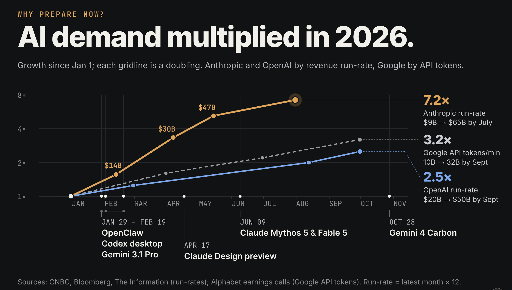

Unfamiliar code
"Explain how this request reaches the database. Point to the files. Tell me what you could not trace."
More of the work is becoming deciding what to ask for and checking what comes back.
Chuck Blake // Developer workflows

Ask: “How could AI help with what I’m doing?”
Question the manual work before accepting it as fixed.
This means considering AI, not automatically using it or granting access.
Move at a pace you can handle.
"Explain how this request reaches the database. Point to the files. Tell me what you could not trace."
"Sketch two ways to add this feature. Compare the trade-offs. Ask me about constraints before recommending one."
Request read-only investigation. Check the explanation against the code and documentation.
Use test data and a review branch. Ask before expanding scope. You can stay with review and explanation as long as they are useful.
A document, diagram, prototype, diff or sample file that stands on its own after the chat ends.
References and changed files, checks that actually ran, decisions and trade-offs, and anything still uncertain.
Ask AI to explain what it did and leave work you can review.
Claude supports this workflow in its Artifacts interface. [27] The habit also works with files and previews in other tools.
“For this request-to-database diagram, link the file and the code it refers to. Explain the routing decisions, mark any path you could not trace, and tell me which part needs my review.”
The artifact is the diagram. The handoff tells the next person where to look and what remains unresolved.
Ask for a review or explanation. Save what helped and what was wrong.
Request a small artifact. Revise it together and check its references.
Compare the result with the original task. Record errors and the time spent reviewing.
Repeat, adjust or stop based on quality and your total effort.
These habits are useful on their own. Next, we’ll look at handing off a whole task.
Pick work worth handing off.
Describe the outcome and context.
Limit access, scope and cost.
Check the result.
Decide what ships.
Keep an owner for the outcome.
Next: one delegated task, then practices from Matt Pocock’s skills and Poteto’s pstack. You still own the outcome.
AI increases your individual capability. It can make you superhuman at a task, but offers limited delegation leverage.
Outsource bounded work to AI while retaining accountability. Assign an outcome; review what comes back.
Both are useful. Delegation is an option; unattended automation is not a requirement.
Carry this invoice-export task through the brief, boundaries, evaluation and acceptance. More generated code is not the goal.
Let an authorized user export the invoices matching the current filters. Follow the existing export pattern and permission checks.
Return a reviewable diff, tests and a sample CSV from fixtures. Explain decisions, unsupported cases and anything you could not verify.
Link relevant files and a known-good example. Ask the agent to surface missing decisions before implementation.
A prompt describes the boundary. Tool permissions enforce it.
A second agent can help review. Agreement between agents is not proof.
The CSV change, a fixture export, actual check results and any unsupported cases or blocked checks.
Use the evaluation evidence to decide whether the export meets the brief. Accept it, request a specific correction or stop.
You do not need to type every line to be responsible for what ships.
Try a grilling session to clarify a plan, or a test-driven loop for one small change. [23]
Try a read-only investigation, a small prototype or a bug fix with runtime evidence. [25]
These are examples you can read and adapt. You do not need to install either collection to begin.
Name the task, the output you want and how you will judge it.
Resources, starter prompts and the sourced 2026 timeline →
Audience view hides speaker notes. Use the Notes button or open the speaker view. Notes are public, not private.
Chuck Blake // chuckblake.com